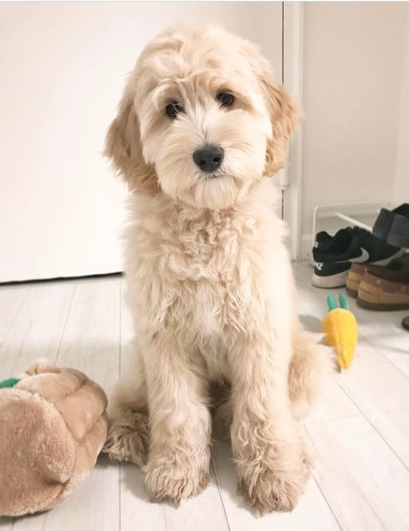

About Me
Hello! I'm Clementine Marie Skwarcan, but some people call me Clem or Clemmie. I have a dog, Dash, two sisters, Anna and Bea, and a Mom and Dad. I am from South Bend, IN and I love to read and write. I, like, literally LOVE to read!
 (This is a picture of a dog that looks like Dash, but it's not him.)
I didn't really tell you a lot about me, did I? Well, here it is.
My favorite color is a lighter sort of yellow, so like a buttermilk or something like that.
My favorite animal is a pig, but I also like turtles and giraffes.
As I said before, I LOVE to read. But, I do other things. For example, sometimes I sit on my bed or somewhere in my room and listen to audiobooks *cough cough, more books* I also like to draw sometimes. I do hang out with my family, too and am usually stuck at home watching my dog when everyone else goes somewhere else. But... reading tops it all.